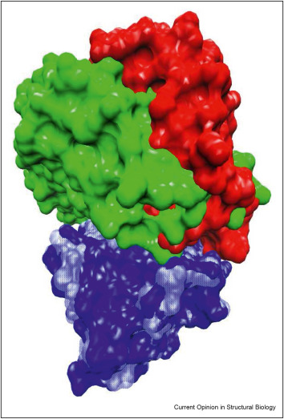
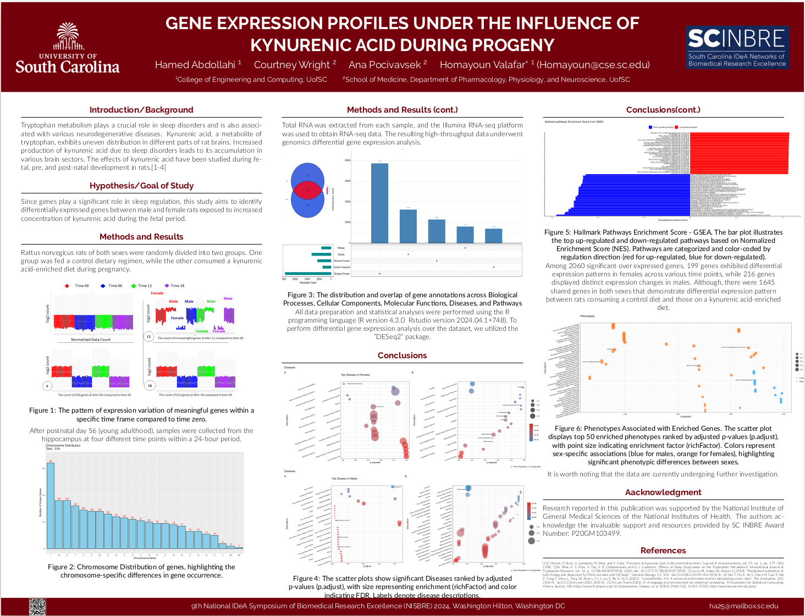
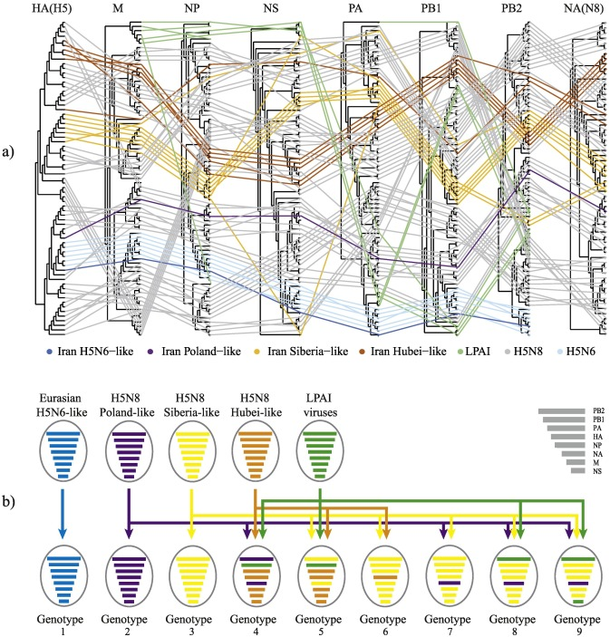
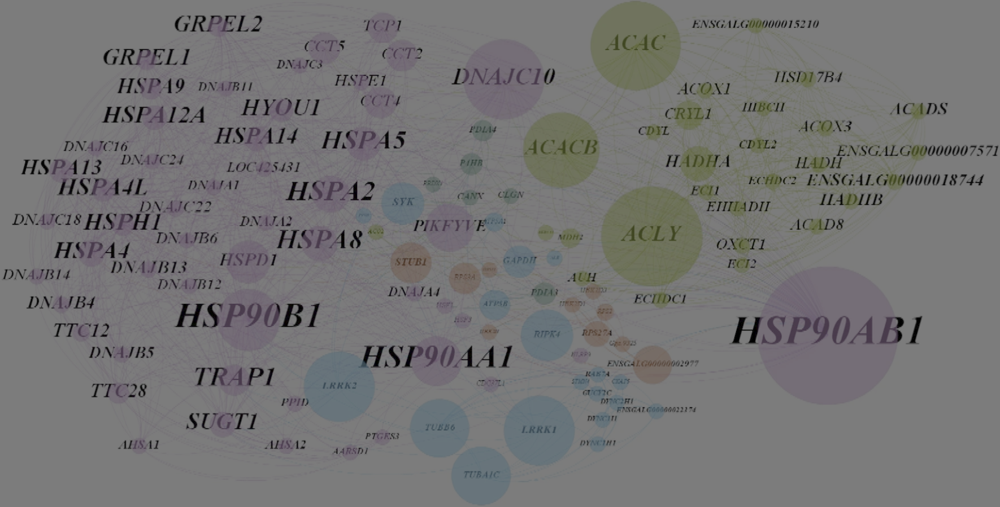
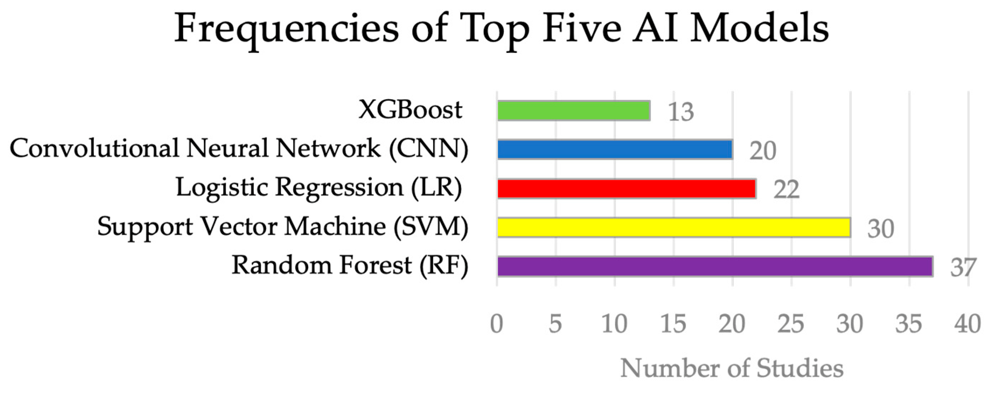
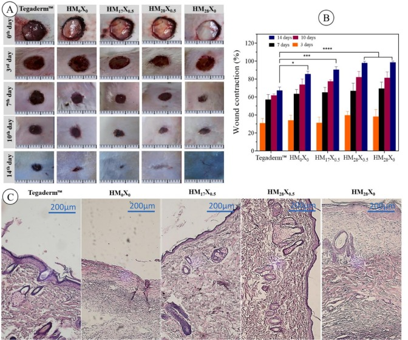
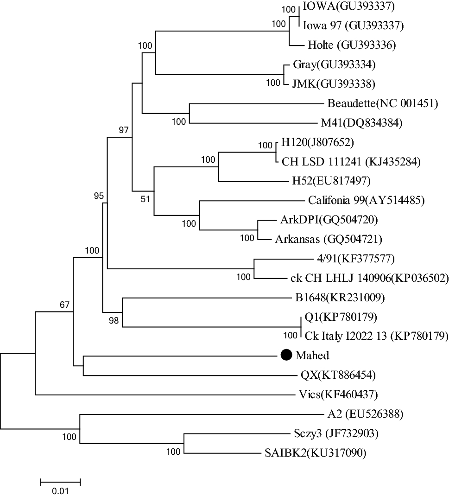
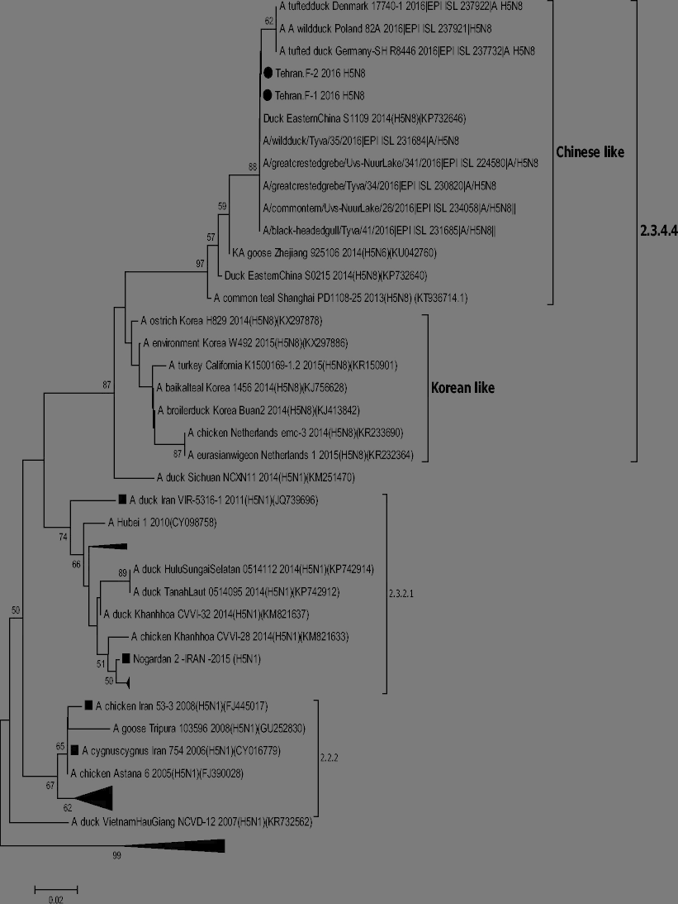
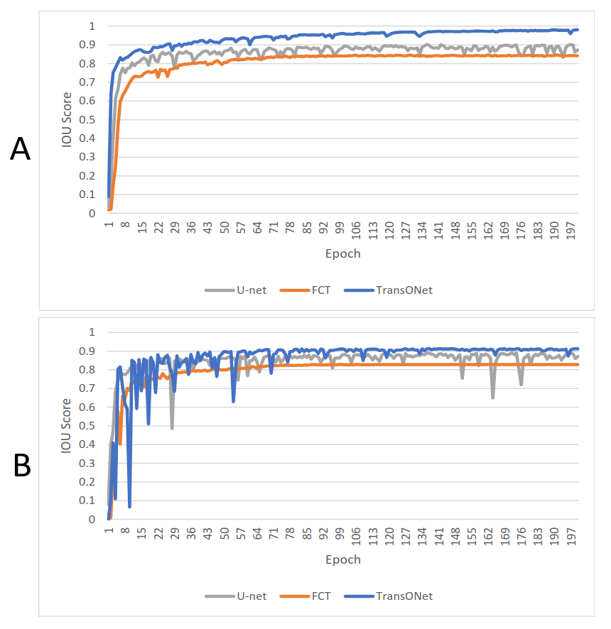

[Current Opinion in Structural Biology 2023]
Computational modeling multiple conformational states of proteins with residual dipolar coupling data
Hamed Abdollahi*, James H. Prestegard, Homayoun Valafar
[Abstract] [Paper]
Computational modeling multiple conformational states of proteins with residual dipolar coupling data
Hamed Abdollahi*, James H. Prestegard, Homayoun Valafar
[Abstract] [Paper]
Solution nuclear magnetic resonance spectroscopy provides unique opportunities to study the structure and dynamics of biomolecules in aqueous environments. While spin relaxation methods are well recognized for their ability to probe timescales of motion, residual dipolar couplings (RDCs) provide access to amplitudes and directions of motion, characteristics that are important to the function of these molecules. Although observed in the 1960s, the acquisition and computational analysis of RDCs has gained significant momentum in recent years, and particularly applications to motion in proteins have become more numerous. This trend may well continue as RDCs can easily leverage structures produced by new computational methods (e.g., AlphaFold) to produce functional descriptions. In this report, we provide examples and a summary of the ways that RDCs have been used to confirm the existence of internal dynamics, characterize the type of dynamics, and recover atomic-scale structural ensembles that define the full range of conformational sampling.
For More Publications, Visit My Google Scholar Profile
[Current Opinion in Structural Biology 2023]
Computational modeling multiple conformational states of proteins with residual dipolar coupling data
Hamed Abdollahi*, James H. Prestegard, Homayoun Valafar
[Abstract] [Paper]
Computational modeling multiple conformational states of proteins with residual dipolar coupling data
Hamed Abdollahi*, James H. Prestegard, Homayoun Valafar
[Abstract] [Paper]
Solution nuclear magnetic resonance spectroscopy provides unique opportunities to study the structure and dynamics of biomolecules in aqueous environments. While spin relaxation methods are well recognized for their ability to probe timescales of motion, residual dipolar couplings (RDCs) provide access to amplitudes and directions of motion, characteristics that are important to the function of these molecules. Although observed in the 1960s, the acquisition and computational analysis of RDCs has gained significant momentum in recent years, and particularly applications to motion in proteins have become more numerous. This trend may well continue as RDCs can easily leverage structures produced by new computational methods (e.g., AlphaFold) to produce functional descriptions. In this report, we provide examples and a summary of the ways that RDCs have been used to confirm the existence of internal dynamics, characterize the type of dynamics, and recover atomic-scale structural ensembles that define the full range of conformational sampling.

Tryptophan metabolism plays a crucial role in sleep disorders and is also associated with various neurodegenerative diseases. Kynurenic acid, a metabolite of tryptophan, exhibits uneven distribution in different parts of rat brains. Increased production of kynurenic acid due to sleep disorders leads to its accumulation in various brain sectors. The effects of kynurenic acid have been studied during fetal, pre, and post-natal development in rats. Since genes play a significant role in sleep regulation, this study aims to identify
differentially expressed genes between male and female rats exposed to increased
concentration of kynurenic acid during the fetal period.Among 2060 significant over expressed genes, 199 genes exhibited differential expression patterns in females across various time points, while 216 genes displayed distinct expression changes in males.

Since 2005, H5Nx highly pathogenic avian influenza (HPAI) viruses of the Goose/Guangdong (Gs/GD) lineage have spread worldwide, affecting poultry and wild birds in Asia, Europe, Africa and North America. So far, the role of Western Asia and the Middle East in the diffusion dynamics of this virus has been poorly explored. In order to investigate the genetic diversity and the role of Iran in the transmission dynamics of the Gs/GD lineage, we sequenced the complete genome of twenty-eight H5Nx viruses which were circulating in the country between 2016 and 2018. We reported the first characterization of the HPAI H5N6 subtype of clade 2.3.4.4B in Iran and gave evidence of the high propensity of the Gs/GD H5 AIVs to reassort, describing six novel H5N8 genotypes of clade 2.3.4.4B, some of them likely generated in this area, and one H5N1 reassortant virus of clade 2.3.2.1c. Our spatial analyses demonstrated that the viruses resulted from different viral introductions from Asia and Europe and provided evidence of virus spread from Iran to the Middle East. Therefore, Iran may represent a hot-spot for virus introduction, dissemination and for the generation of new genetic variability. Increasing surveillance efforts in this high-risk area is of utmost importance for the early detection of novel emerging strains with zoonotic potential.

[Arch Virol 2021]
Coronavirus: proteomics analysis of chicken kidney tissue infected with variant 2 (IS-1494)-like avian infectious bronchitis virus
Hamed Abdollahi, Mostafa Rezaei-Tavirani, Arash Ghalyanchilangeroudi, Hossein Maghsoudloo, Masood Hashemzadeh, Hossein Hosseini & Abbas Barin
[Abstract] [Paper]
Coronavirus: proteomics analysis of chicken kidney tissue infected with variant 2 (IS-1494)-like avian infectious bronchitis virus
Hamed Abdollahi, Mostafa Rezaei-Tavirani, Arash Ghalyanchilangeroudi, Hossein Maghsoudloo, Masood Hashemzadeh, Hossein Hosseini & Abbas Barin
[Abstract] [Paper]
Avian infectious bronchitis virus is one of the most important gammacoronaviruses, which causes a highly contagious disease. In this study, we investigated changes in the proteome of kidney tissue of specific-pathogen-free (SPF) chickens that were infected with an isolate of the nephrotropic variant 2 genotype (IS/1494/06) of avian coronavirus. Twenty 1-day-old SPF White Leghorn chickens were randomly divided into two groups, each comprising 10 chickens, which were kept in separate positive-pressure isolators. Chickens in group A served as a virus-free control group up to the end of the experiment, whereas chickens in group B were inoculated with 0.1 ml of 104.5 EID50 of the IBV/chicken/Iran/UTIVO-C/2014 isolate of IBV, and kidney tissue samples were collected at 2 and 7 days post-inoculation (dpi) from both groups. Sequencing of five protein spots at 2 dpi and 22 spots at 7 dpi that showed differential expression by two-dimensional electrophoresis (2DE) along with fold change greater than 2 was done by MS-MALDI/TOF/TOF. Furthermore, the corresponding protein-protein interaction (PPI) networks at 2 and 7 dpi were identified to develop a detailed understanding of the mechanism of molecular pathogenesis. Topological graph analysis of this undirected PPI network revealed the effect of 10 genes in the 2 dpi PPI network and nine genes in the 7 dpi PPI network during virus pathogenesis. Proteins that were found by 2DE analysis and MS/TOF-TOF mass spectrometry to be down- or upregulated were subjected to PPI network analysis to identify interactions with other cellular components. The results show that cellular metabolism was altered due to viral infection. Additionally, multifunctional heat shock proteins with a significant role in host cell survival may be employed circuitously by the virus to reach its target. The data from this study suggest that the process of pathogenesis that occurs during avian coronavirus infection involves the regulation of vital cellular processes and the gradual disruption of critical cellular functions.

[Cancers 2024]
Integrating Omics Data and AI for Cancer Diagnosis and Prognosis
Yousaku Ozaki, Phil Broughton, Hamed Abdollahi, Homayoun Valafar, and Anna V. Blenda
[Abstract] [Paper]
Integrating Omics Data and AI for Cancer Diagnosis and Prognosis
Yousaku Ozaki, Phil Broughton, Hamed Abdollahi, Homayoun Valafar, and Anna V. Blenda
[Abstract] [Paper]
Cancer is one of the leading causes of death, making timely diagnosis and prognosis very important. Utilization of AI (artificial intelligence) enables providers to organize and process patient data in a way that can lead to better overall outcomes. This review paper aims to look at the varying uses of AI for diagnosis and prognosis and clinical utility. PubMed and EBSCO databases were utilized for finding publications from 1 January 2020 to 22 December 2023. Articles were collected using key search terms such as “artificial intelligence” and “machine learning.” Included in the collection were studies of the application of AI in determining cancer diagnosis and prognosis using multi-omics data, radiomics, pathomics, and clinical and laboratory data. The resulting 89 studies were categorized into eight sections based on the type of data utilized and then further subdivided into two subsections focusing on cancer diagnosis and prognosis, respectively. Eight studies integrated more than one form of omics, namely genomics, transcriptomics, epigenomics, and proteomics. Incorporating AI into cancer diagnosis and prognosis alongside omics and clinical data represents a significant advancement. Given the considerable potential of AI in this domain, ongoing prospective studies are essential to enhance algorithm interpretability and to ensure safe clinical integration.

[IJBM2024]
Polydopamine contained hydrogel nanocomposites with combined antimicrobial and antioxidant properties for accelerated wound healing
Mahin Abdollahi, Sina Andalib, Roghayeh Ghorbani, Davoud Afshar, Mohammad Gholinejad, Hamed Abdollahi, Ali Akbari, Nasser Nikfarjam
[Abstract] [Paper]
Polydopamine contained hydrogel nanocomposites with combined antimicrobial and antioxidant properties for accelerated wound healing
Mahin Abdollahi, Sina Andalib, Roghayeh Ghorbani, Davoud Afshar, Mohammad Gholinejad, Hamed Abdollahi, Ali Akbari, Nasser Nikfarjam
[Abstract] [Paper]
Overproduction of reactive oxygen species (ROS) in infected wounds induces a tremendous inflammatory reaction to delay wound healing. To address this problem, we designed a multifunctional polyacrylamide/PVA-based hydrogel containing synthesized poly(1-glycidyl-3-butylimidazolium salicylate) (polyGBImSal) and fabricated polydopamine-coated polyphenolic nanosheet (PDA@PNS) for wound dressing. The PDA@PNS particles were designed to induce I) antioxidant and anti-inflammatory features through ROS-scavenging and II) cell adhesive properties by the existing polydopamine into the hydrogels. The poly(ionic liquid)-based polyGBImSal was designed to allocate effective hydrogel antimicrobial activity. The fabricated hydrogel nanocomposites showed excellent properties in the swelling ratio, cell adhesiveness, protein adsorption, and anti-inflammatory, proving their general performance for application in wound healing. Furthermore, these hydrogels showed high antimicrobial activity (over 95 %) against three common wound-infecting pathogenic microbes: Escherichia coli, Staphylococcus aureus, and Candida albicans. The healing process of full-thickness dermal wounds in rats was accelerated by applying hydrogel nanocomposites with 0.5 wt% of PDA@PNS and 28 wt% of polyGBImSal. The wound closure contraction attained full closure, reaching 100 %, after 14 days, contrasted with the control group employing commercial wound dressing (Tegaderm), which achieved a closure rate of 68 % within the equivalent timeframe. These results make these hydrogel nanocomposites promising candidates for multifunctional wound dressing applications.

[VirusDisease2018]
Complete genome analysis of Iranian IS-1494 like avian infectious bronchitis virus
Fatemeh Sadat Mousavi, Arash Ghalyanchilangeroudi, Hossein Hosseini, Bahar Nayeri Fasaei, Seyed Ali Ghafouri, Hamed Abdollahi, Mohammad Hosein Fallah-Mehrabadi & Naser Sadri
[Abstract] [Paper]
Complete genome analysis of Iranian IS-1494 like avian infectious bronchitis virus
Fatemeh Sadat Mousavi, Arash Ghalyanchilangeroudi, Hossein Hosseini, Bahar Nayeri Fasaei, Seyed Ali Ghafouri, Hamed Abdollahi, Mohammad Hosein Fallah-Mehrabadi & Naser Sadri
[Abstract] [Paper]
The nephropathogenic infectious bronchitis virus (IBV) strain IS-1494 like (variant-2; GI-23) was first isolated in the Middle East (1998). Despite intensive vaccinations, IS-1494 like IBVs are still circulating in Iran (the dominant genotype) and spread to other countries. Here, the full-length genome of this Iranian IS-1494 like IBV was (Mahed) determined to understand its evolutionary relationships. The genome consists of 27,652 nucleotides, with mutations in most of the structural genes. Thirteen open reading frames (ORFs) were predicted in the Mahed isolate (5′ UTR-1a-1b-S-3a-3b-E-M-4b-4c-5a-5b-N-6b-3′ UTR). ORFs 4b, 4c, and 6b, which has rarely been reported, were present in the Mahed genome. According to phylogenetic analysis of the full-length genome, 1a, S2, M, E, N protein, Mahed isolate clustered with the QX type strain. Based on the partial 1b, S1, Mahed clustered with the Q1 strain. The full-length genome of Mahed isolate shared the highest sequence homology with Gray and JMK (90.06–90.07%) and was least related to the Vic-s (86.21%). These data show that evolutionary variation because of recombination in IBV plays a major role in the adaptation and origin of IBV leading to new genetic and types of the virus strain.

[Tropical Animal HP 2017]
Clade 2.3.4.4 avian influenza A (H5N8) outbreak in commercial poultry
Seyed Ali Ghafouri, Arash GhalyanchiLangeroudi, Hossein Maghsoudloo, Reza KH Farahani, Hamed Abdollahi, Farshad Tehrani & Mohammad Hossein Fallah
[Abstract] [Paper]
Clade 2.3.4.4 avian influenza A (H5N8) outbreak in commercial poultry
Seyed Ali Ghafouri, Arash GhalyanchiLangeroudi, Hossein Maghsoudloo, Reza KH Farahani, Hamed Abdollahi, Farshad Tehrani & Mohammad Hossein Fallah
[Abstract] [Paper]
In 2010, H5N8 highly pathogenic avian influenza (HPAI) viruses of the A/Goose/Guangdong/1/1996 lineage dramatically affected poultry and wild birds in Asia, Europe, and North America. In November 2016, HPAI H5N8 was detected in a commercial layer farm in Tehran province. The diagnosis was based on real-time reverse transcriptase PCR (RRT-PCR) and sequencing of haemaglutinin (HA) and neuraminidase (NA) genes from suspected samples. Genetic and phylogenetic analysis of the HA gene demonstrated that the Iranian HPAI H5N8 viruses belong to the HPAI H5 virus clade 2.3.4.4 and cluster within group B (Gochang-like). In particular, the highest similarity was found with the sequences of the HPAI H5N8 identified in Russia in 2016. To our knowledge, this clade has not been previously detected in Iran. Previous HPAI A (H5) epidemic in Iran occurred in 2015 and involved exclusively viruses of clade 2.3.2.1c. These findings indicate that Iran is at high risk of introduction of HPAI H5 of the A/Goose/Guangdong/1/1996 lineage from East Asia and highlight the need to maintain adequate monitoring activities in target wild and domestic bird species for HPAI early detection. This study is useful for better understanding the genetic and antigenic evolution of H5 HPAI viruses in the region and the world.

[CSCI 2023]
TransONet: Automatic Segmentation of Vasculature in Computed Tomographic Angiograms Using Deep Learning
Alireza Bagheri Rajeoni, Breanna Pederson, Ali Firooz, Hamed Abdollahi, Andrew K. Smith, Daniel G. Clair, Susan M. Lessner, Homayoun Valafar
[Abstract] [Paper]
TransONet: Automatic Segmentation of Vasculature in Computed Tomographic Angiograms Using Deep Learning
Alireza Bagheri Rajeoni, Breanna Pederson, Ali Firooz, Hamed Abdollahi, Andrew K. Smith, Daniel G. Clair, Susan M. Lessner, Homayoun Valafar
[Abstract] [Paper]
Pathological alterations in the human vascular
system underlie many chronic diseases, such as atherosclerosis
and aneurysms. However, manually analyzing diagnostic images
of the vascular system, such as computed tomographic angiograms
(CTAs) is a time-consuming and tedious process. To address this
issue, we propose a deep learning model to segment the vascular
system in CTA images of patients undergoing surgery for
peripheral arterial disease (PAD). Our study focused on
accurately segmenting the vascular system (1) from the descending
thoracic aorta to the iliac bifurcation and (2) from the descending
thoracic aorta to the knees in CTA images using deep learning
techniques. Our approach achieved average Dice accuracies of
93.5% and 80.64% in test dataset for (1) and (2), respectively,
highlighting its high accuracy and potential clinical utility. These
findings demonstrate the use of deep learning techniques as a
valuable tool for medical professionals to analyze the health of the
vascular system efficiently and accurately. Please visit the GitHub
page for this paper at https://github.com/pip-alireza/TransOnet.